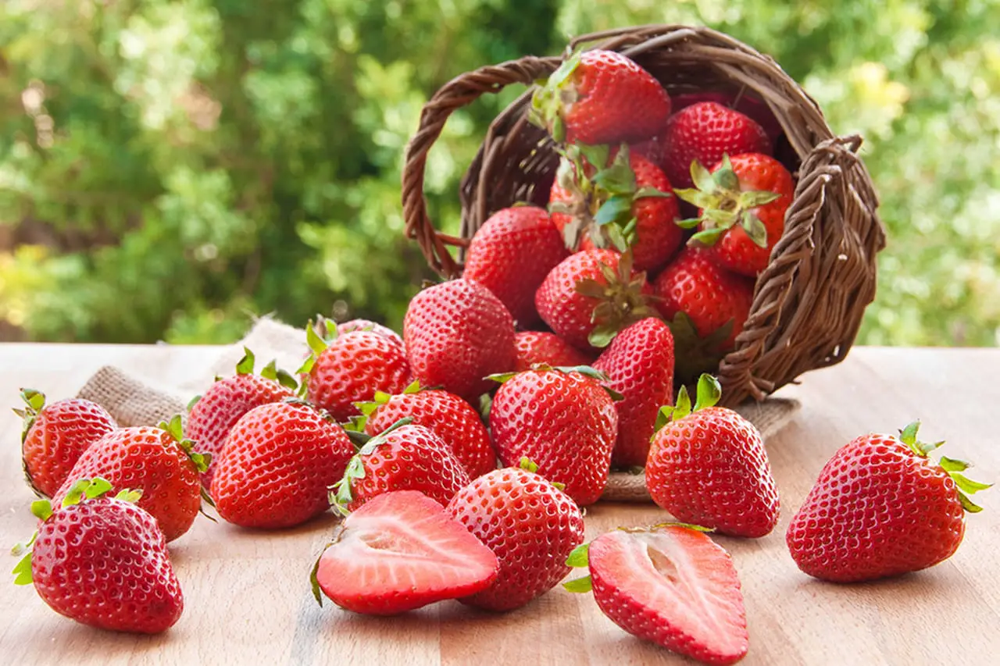

Morangos Orgânicos
Deliciosos morangos produzidos sem o uso de pesticidas. Vendidos em caixas de 500g.
Preço: R$ 10,00
caixa de 1k
preço: 20,00
Direto da feira do agricultor da Comunidade!
Somos um grupo de agricultores dedicados a oferecer os morangos mais frescos e saborosos da região. Nossa produção é feita de forma sustentável e respeitando a natureza.
nosso grupo atua coma feira de morango nos centros da cidades
venha a nossa feirinha de morango
localizado no centro de braganey,pr, br
Deliciosos morangos produzidos sem o uso de pesticidas. Vendidos em caixas de 500g.
Preço: R$ 10,00
caixa de 1k
preço: 20,00
Saudáveis e frescos, nossos morangos hidropônicos são a escolha perfeita para quem valoriza qualidade.
caixa 500g
Preço: R$ 12,00
Para mais informações, entre em contato conosco:
Email: contato@feirinhadomorango.com.br
Telefone: (45) 99144-4932